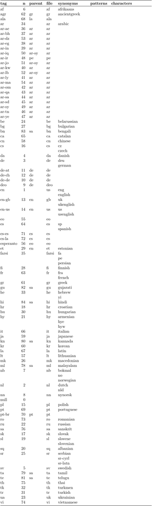

Contents
Two commands to set up the language aspects
Today, with the international use of the UTF-8 standard for input and output encoding, you only need two commands, with the language tag you want in brackets:
- \mainlanguage [tag]
-
- to set the language of auto-generated language elements, like the title of the table of contents or the appendix,
- and to change the Hyphenation rules, quotation marks, all that sort of thing, to that of a different language.
- \language [tag]
-
- to change the Hyphenation rules, quotation marks, all that sort of thing, to that of a different language. (The default language is English.)
\mainlanguage includes all settings of \language. \language is only needed when you use more than 1 language in a document (see mixed languages), otherwise \mainlanguage is enough to change labels and hyphentation patterns.
As you can see in the following example \mainlanguage change the float label and the quotation marks but \language changes only the quotation marks and uses the label of the main language.
-
\startplacefigure[title=\quotation{English quotes}] \midaligned{\blackrule[width=6cm,height=1cm,color=red]} \stopplacefigure \start \mainlanguage[nl] \startplacefigure[title=\quotation{Dutch quotes}] \midaligned{\blackrule[width=6cm,height=1cm,color=green]} \stopplacefigure \stop \start \language[fr] \startplacefigure[title=\quotation{French quotes}] \midaligned{\blackrule[width=6cm,height=1cm,color=blue]} \stopplacefigure \stop
-

ConTeXt's markup
ConTeXt has a multilingual interface to enable users to work in their own language. It is specified by setting the ConTeXt interface value in the first line of your input file:
-
% interface=encommands -
% interface=nlcommando’s -
% interface=debefehle -
% interface=czpřikazy -
% interface=frcommandes -
% interface=itcomandi -
% interface=rocomenzile
Language-specific pages
- Right-to-left RTL for dealing with Right-To-Left texts as well as BiDi (bidirectional) texts
- Arabic and Hebrew
- Chinese Japanese and Korean
- Czech
- French punctuation and spacing
- Gaelic
- German
- Greek
- Indic scripts
- Russian
- Vietnamese
Language tags
Here's the list of ConTeXt's language tags, also available in the latest official Languages manual. Sources are available).
-
\usemodule[languages-system] \loadinstalledlanguages \showinstalledlanguages
- 
Other links
Finally, for older content, we keep a page Encodings and Regimes - Old Content about including accents, composite characters, and how "ä" and alike were produced in LaTeX/ConTeXt mkii. Second Step gave an example for german language.